Overview
Below, you will find information on how to set up a VCloth 2.0 attachment. Keep in mind that finding a well-suited parameter set takes time and a lot of testing/playing around. Always test your actual configuration against the animations you have. As a rule of thumb, the faster the character or any body part moves, the more fine-tuned the setup should be; and the more animations you want to play on the character, the more time-consuming the setup is, since you have to test more configurations.
In the following paragraphs, the use of cloth within CRYENGINE is described. After being exported from Maya, the cloth is set up entirely within the Character Tool.
Before you continue, you need to set up your cloth in Maya and export it as a *.skin file. This exporting process is described in detail on the following page: Maya - Export VCloth to CRYENGINE.
Since the cloth needs to be skinned according to the used character, you cannot simply change clothes between characters if they have different joints - in this case you have to re-skin the cloth to each character separately (see How To - Export VCloth from Maya to CRYENGINE).
Make sure to load a level, or the VCloth attachment may not render properly.
Setting Up the Character
1. First, load your character without cloth as usual into the Character Tool:
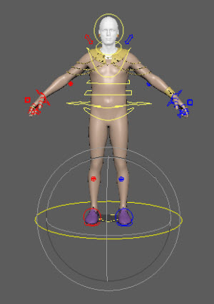
2. Add a new attachment:
3. Name the Attachment and set Type to VCloth 2.0 Attachment:
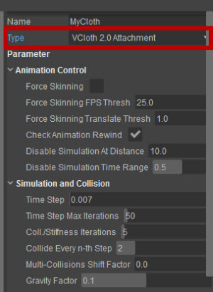
4. Scroll down to the Files sub-menu and add the renderMeshName, the skin-binding, the simMeshName, the simBinding and the material file:
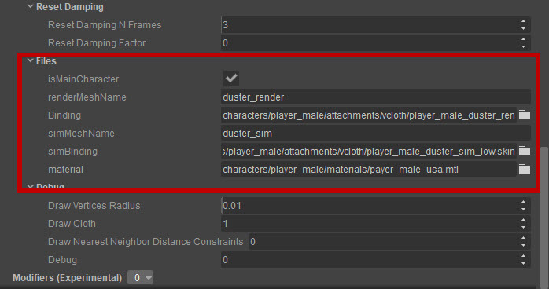
(you can also change the according *.cdf file directly, which is basically an *.xml file, if that suits you better)
In case you might want to change the according *.cdf file directly - the content belonging to the VCloth would look anywhere something similar to this:
<Attachment Type="CA_VCLOTH" AName="MyCloth" forceSkinning="0" forceSkinningFpsThreshold="25" forceSkinningTranslateThreshold="1"
checkAnimationRewind="1" disableSimulationAtDistance="10" disableSimulationTimeRange="0.5"b timeStep="0.0070000002" timeStepMax="50" numIterations="5" collideEveryNthStep="2" collisionMultipleShiftFactor="0" gravityFactor="0.1" stretchStiffness="1" shearStiffness="0" bendStiffness="0" bendStiffnessByTrianglesAngle="0" pullStiffness="0" friction="0" rigidDamping="0" springDamping="0" springDampingPerSubstep="0" collisionDampingTangential="0" nearestNeighborDistanceConstraints="0" nndcAllowedExtension="0" nndcMaximumShiftFactor="0.25" nndcShiftCollisionFactor="0.5" resetDampingFactor="0" resetDampingRange="3" translationBlend="0" rotationBlend="0" externalBlend="0" maxAnimDistance="0" filterLaplace="0" isMainCharacter="1" renderMeshName="" Binding=""simMeshName="" simBinding="" Material="" debugDrawVerticesRadius="0.0099999998" debugDrawCloth="1" debugDrawNNDC="0" debugPrint="0" hide="0"/>
5. Now save your character file and reload it - the cloth should now be visible with the default parameters set.
Collisions
Collision Proxies
VCloth needs an additional, explicit collision proxy setup. Thus, cloth behavior can be fine-tuned according to the characters and animations and collision handling can be executed efficiently.
Collision handling for cloth is an expensive process. Thus, make sure to only set up proxies that are really needed. The fewer proxies, the faster the collision handling.
Collision handling is fulfilled by using Lozenges as collision proxies - these are flexible geometric objects which can be set up using only four numbers. Using Lozenges, spheres, capsules, boxes and other geometrical objects can be described. To see how Lozenges can be setup in CRYENGINE see this link: Setup of Lozenges.
How to set up a Collision Proxy
To visualize your proxies, enable Secondary Animation -> Cloth Proxies in the Display Options menu:
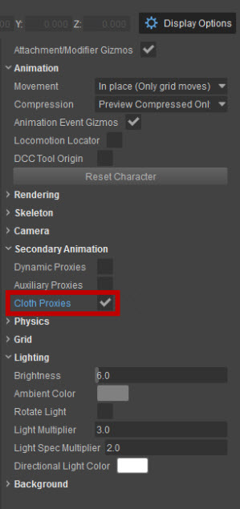
- In the properties, click Attachments -> Add
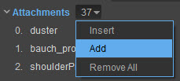
- A new attachment is created. Now you can name it:
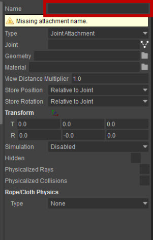
3. For Type, select ProxyAttachment
4. For Purpose, choose Cloth
5. Select a Joint that will be the parent of the Proxy. Now your attachment should look similar to this:
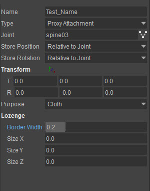
6. Set Transformation and Lozenge Parameters according to your character. You can use the mouse in the viewport to transform the proxy directly on the character.
7. Finally, your scene should look similar to the image below:
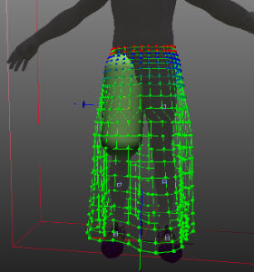
Now repeat the process for all body parts that are needed for collision handling of the cloth.
The collision handling algorithm ensures that the vertices of the cloth are never inside of one of the Lozenge Collision Proxies. Thus, you have to make sure that the Lozenges are approximating the character appropriately. For the best results, it is recommended to set up the Lozenges in such a way that the character lies entirely within the proxies. Keep in mind that the vertices of the cloth will always be on top of the proxies, whereas the edges might intersect the proxies. If a vertex lies within one proxy before collision handling (e.g. due to fast movements of body parts), the vertex is projected onto the surface of the proxy.
Always test your proxy setup with the character’s animation. During animations, problems with your proxy setup will become quickly obvious. As a rule of thumb it is better to create rather rough, big proxies than trying to approximate the characters pose very accurately. Big proxies work better during animation. Eventually, a rough proxy setup works surprisingly well in practice. Also, if you are using boxes as proxies, always use a Lozenge radius to round the box edges. Otherwise, cloth vertices might get stuck on the hard edges and not move smoothly over the edges.
In the picture above, no collision proxies have been set. The cloth is only held by attached vertices and is not interacting with the body (see intersections with legs).
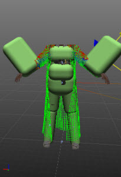 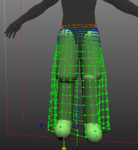
In the picture above, a rough proxy setup (left) ensures cloth interaction with the body. Hands normally result in intersection problems (especially while the character is running); big proxies might solve this problem in practice. However, due to the complexity of movements and sometimes intersections with the body, to improve stability, it is often recommended to not use proxies for hands at all.
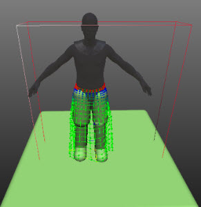
A simple floor proxy moves with the characters and works well for flat surfaces.
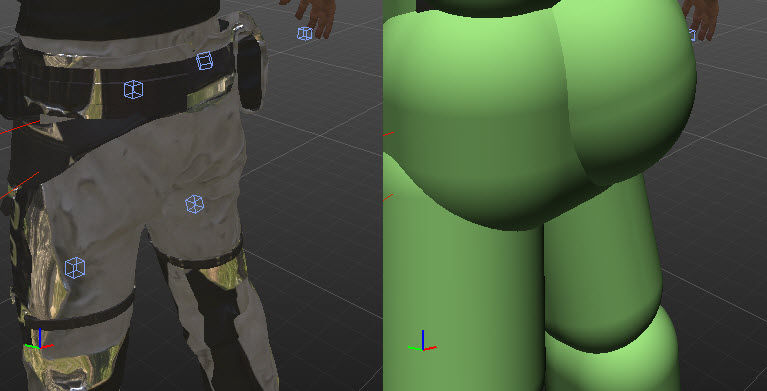
Rather rough proxies normally work better in all possible situations than filigrane, accurate ones.
Self-Collisions
VCloth 2.0 does not handle self-collision of cloth. Proper self-colliding cloth is expensive, often unstable in certain situations and mostly simply not needed nor worth the performance hit. Normally, situations of self-collisions can be avoided by using attached/constraint cloth vertices (e.g. in case of arm wrinkles). Other, special cases like two skirts lying on top of each other, are not possible to simulate with VCloth. If you need such special cases, you will have to design those cloth pieces using the standard animation and skinning approaches.
Tweaking Parameters
The default settings are pretty safe and should at least result in a stable simulation - although the resulting cloth would be very elastic. A detailed description of all parameters is given here, but the most important ones are discussed below.
Let’s tweak the parameters for better results (also keep in mind that you have to set up some collision proxies, as described above in Collisions.
- Set Time Step to 0.01, this should also be safe. If your simulation gets unstable, reduce this value
- Add some friction by setting Friction to 0.01
- Try reducing Coll./Stiffness Iterations to for example 3. If your simulation gets unstable, increase this value back again
- Add some Shear Stiffness and Bend Stiffness - set those values to for example 0.5
Now check out some animations on your character, how does the cloth behave?
- Too light/heavy? -> increase/decrease Gravity Factor
- Are collisions handled well? If not, decrease Collide Every nth Step, increase Coll./Stiffness Iterations
- Does cloth behave as you expect? If not, play around with the parameters in Stiffness and Elasticity.
- Tweak Friction and Rigid Damping
These are the most important parameters. Ideally, it should be possible to set up a proper cloth using only the above-mentioned parameters.
If your cloth is hi-res and still too elastic, you should try out the NNDC - Nearest Neighbor Distance Constraints, this is a sophisticated algorithm to decrease elasticity strongly. It might work, or not - that depends on the topology of your cloth. But if it works, you can normally decrease the values in Stiffness and Elasticity and more importantly for performance, the number of Coll./Stiffness Iterations.
If you use Nearest Neighbor Distance Constraints (NNDC), keep in mind:
- CRYENGINE implements a strongly improved adaption of NNDCs. These are used to enforce the elongation of the cloth. Hence, it reduces the elasticity/springiness of the cloth strongly.
- NNDCs use mesh topology to reduce elasticity along paths to the closest constraint/attached vertices. Depending on your mesh, these might work impressively.
- Leave the parameter NNDC shift collision factor untouched at 1.0 - otherwise there might be flickering.
- NNDC allowed extension should also be left at 0.0, since it works pretty fine with this value.
Performance Improvements
Performance Considerations
Simulation Mesh Setup
- Less Vertices = Higher Performance
- Try to model with homogeneous regular quads. Cloth is a homogeneous material, and the mesh topology itself is crucial for representing this fact and has a strong impact on the cloth animation itself.
- Attached Vertices must be positioned above the body skin. This way, intersections with the body skin are avoided, since the attached vertices are kept static above the skin during simulation.
- Avoid single vertices that are not attached in between two fully attached vertices. This way, jittering of the single not-attached vertex is avoided.
Collision Proxies
- Less Proxies = Higher Performance (Proxies are kind of expensive, the collision handling process is the most expensive process in the cloth simulation)
- Don't even try to set them accurately. Just make them bigger than the body skin, only use one for each body part. They don't need to be incredibly accurate to make it look realistic. The bigger they are, the higher the probability that no unwanted artifacts occur in crazy characters animations.
- Small bulges in the skin that should be handled by collisions (e.g. an attached backpack) need separate proxies. Depending on the resolution of the cloth, these might need to be much larger than the actual object itself (to avoid intersections of cloth and object).
- Arms and hands - these are moving in most fast animations (like running) very quickly. Try to make it look good without proxies for arms and hands. Normally, this will look good. If you really need them make them much bigger than the body, for hands, try to use large spheres or a big box.
Performance Table
The following table gives you an overview of the most important performance considerations in relation to parameter settings. VCloth simulation performance strongly depends on your configuration.
Context/Parameter | Value/Size | Performance | Ideal Value Range |
|---|---|---|---|
Simulation Mesh | Less vertices | higher | ca. 500 - 1500 |
No. of Coll./Stiffness Iterations | Smaller | higher | 3-4 |
No. of collision proxies | Smaller | higher | 8 -12 |
Nearest Neighbor Distance Constraints | Enable | Equal, but much stiffer cloth possible | Enable If cloth flickers, you need to disable this value and tweak stiffness via Stiffness and Elasticity values and increase no. of iterations with Coll./Stiffness Iterations. |
Visual Feedback/Debugging
Debug using Console Variables
- Skinning:
- ca_DebugSWSkinning
By enabling this variable, the skinning of the render mesh can be explored.
- ca_DebugSWSkinning
- Simulation:
- ca_DrawCloth
Set this variable to 2 to use the visual debugging features of the VCloth 2.0 Attachment in the Character Tool - (can be found in the Debug section in the Parameters of the attachment).
- ca_DrawCloth
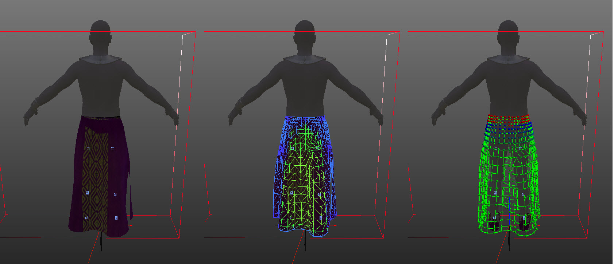
Left: Original
Middle: ca_DebugSWSkinning enabled [skinning]
Right: ca_DrawCloth = 2 [simulation] (Result depends on Attachment Debug Parameters)
Debug Simulation
To visualize simulation data, please make sure ca_DrawCloth is set to 2.
The effect of each of these parameters is described below.
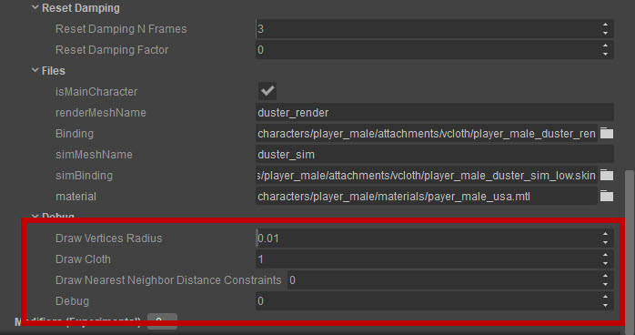
Draw Vertices Radius
Ensure console Variable ca_DrawCloth is set to 2.
Change Radius of Drawn Vertices
Color Encoding: green (unconstrained), green to blue (intensity of confinement), Red (fully constrained).
Different Draw Vertices Radius Sizes: 0.01 (left), 0.02 (middle), 0.04 (right) - colors indicate the strength of confinement 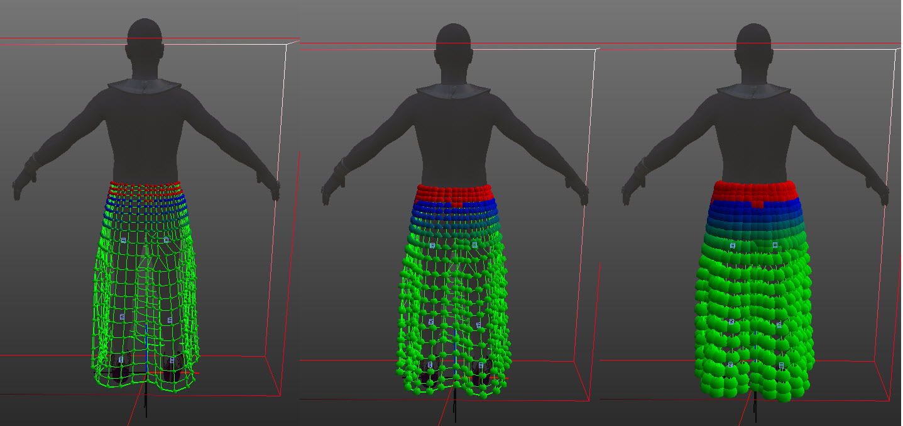
Parameter: Draw Cloth
Ensure console Variable ca_DrawCloth is set to 2.
Using this parameter, a detailed visualization of generated simulation data can be enabled.
- 1 - draw stretch links
- 2 - draw shear links
- 3 - draw bend links
- 4 - draw all links (stretch, shear and bend)
- 6 - draw particle positions (simulation position and skinned position, additionally, previous step position)
- 7, 8, 9, 10 - draw determined bending triangles, including actual normal with different length (7..10 - descending order)
Stretch links (Parameter: 1); Right: Stretch, Shear, Bend links (Parameter: 4) 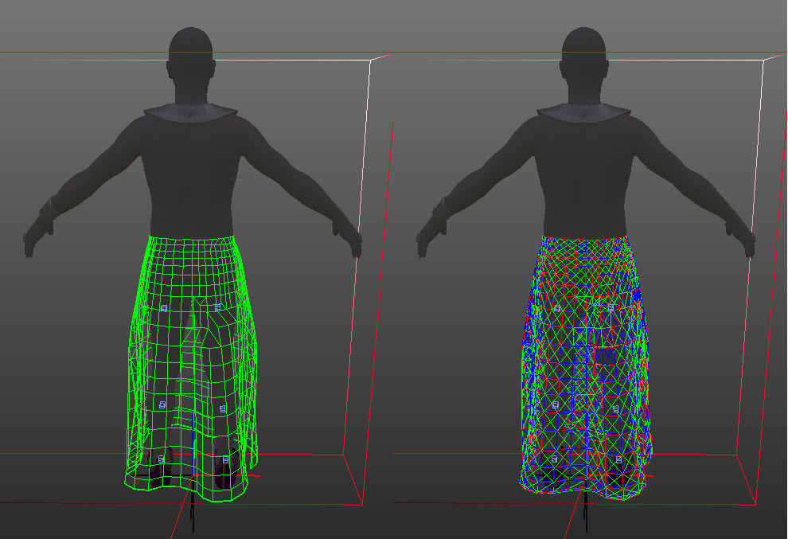
Bending triangles 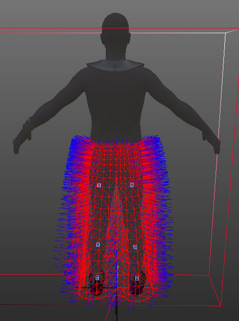
In the above picture, all edges between two neighboring triangles are drawn, as well as all normals of each triangle.
Parameter: Draw Nearest Neighbor Distance Constraints
Ensure console Variable ca_DrawCloth is set to 2.
Using this parameter, a detailed visualization of generated Nearest Neighbor Distance Constraints data can be enabled.
- 1 - for each vertex, draw closest 100% attached vertex
- 2 - for each vertex, draw closest 100% attached vertex (ordered by distance to closest attached vertex)
- 3 - for each vertex, draw connection to next neighbor, which follows on the path over the simulation mesh to the closest 100% attached vertex
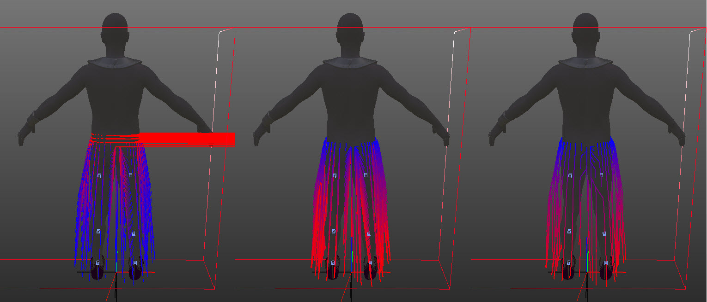
Left: Parameter: 1 - Closest attached Vertex (if vertex is attached, or no connection is found (e.g., disconnected islands), a red line is drawn to the right); Middle: Parameter: 2 - Closest attached Vertex, ordered by distance);
Right: Parameter: 3 - Next neighbor on the way to closest attached vertex - if this connectivity is not resulting in kind of straight lines, Nearest Neighbor Distance Constraints should be disabled.
Parameter: Debug
Ensure console Variable ca_DrawCloth is set to 2.
This parameter shows some detailed values:
- 1 - shows time step, normalized time, no of steps
- 2 - print console message: normalized time
- 3 - print console message: global locator position of the associated character
Related Pages
For more information on how to use VCloth, check the following pages: